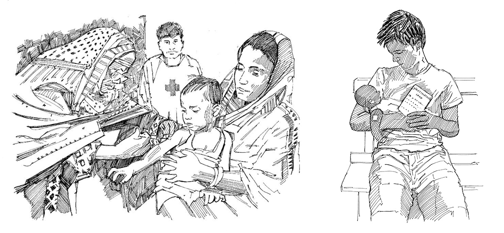

La difteria, el tétano, pertussis (tos ferina), polio, sarampión, rubéola, paperas, varicela, meningitis, hepatitis B, fiebre amarilla y la tuberculosis son enfermedades comunes pero graves; pueden matar o paralizar a niños o adultos de por vida.
Las vacunas protegen a los bebés, niños y adultos de contraer y propagar estas enfermedades y de las formas graves de ellas.
Lo que necesita saber
Las vacunas contra las enfermedades mencionadas anteriormente se administran a los bebés después del nacimiento y durante el primer año de vida. Se pueden administrar dosis adicionales más adelante de acuerdo con los programas nacionales de inmunización.
Las vacunas protegen a los bebés y niños contra la adquisición y propagación de ciertas enfermedades y de las formas graves de estas enfermedades.
Todos los bebés deben vacunarse contra estas enfermedades como parte del programa de vacunación de rutina para bebés. Hable con su autoridad de salud local sobre las edades de vacunación y familiarícese con el calendario nacional de inmunización. Se debe verificar el estado de vacunación de los niños mayores y si no han sido vacunados, deben considerarse para la vacunación.
El calendario de vacunación de rutina puede variar de un país a otro.
Mensajes clave
Un niño que no ha sido vacunado tiene mayores probabilidades de morir de enfermedades o de contraer una forma grave de una enfermedad.
Las vacunas son seguras y eficientes; todos los niños deben ser vacunados.
Las vacunas a veces deben ser pospuestas para personas con una enfermedad aguda moderada o grave, pero el bebé, niño o adulto debe vacunarse tan pronto como la enfermedad haya mejorado.
Las mujeres embarazadas necesitan al menos dos vacunas contra el tétano antes de dar a luz.
Acciones clave
Averigüe con sus autoridades de salud cuál es el calendario de vacunación específico en su área.
Averigüe cuándo se administran las vacunas en su área (en instalaciones de salud y sesiones de divulgación).
Averigüe dónde acudir para obtener las vacunaciones.
Si las madres no llevan a sus hijos a las clínicas de vacunación, averigüe por qué.
Llegue a conocer a todas las familias con bebés menores de un año y visítelos una vez al mes.
Explique a las mujeres embarazadas que deben visitar al trabajador de salud para chequeos y que deben recibir dos dosis de vacuna contra el tétano antes de que nazcan sus hijos.
Si algunos miembros de la comunidad tienen miedo de las vacunas, asista a los trabajadores de la comunidad a calmar y eliminar sus miedos. Corrija los rumores y la desinformación sobre vacunaciones.

Un niño que se está vacunando. Tener una tarjeta de vacuna.
Herramientas para mensajes comunitarios
Vea los siguientes mensajes de la comunidad para apoyar vacunaciones de rutina: